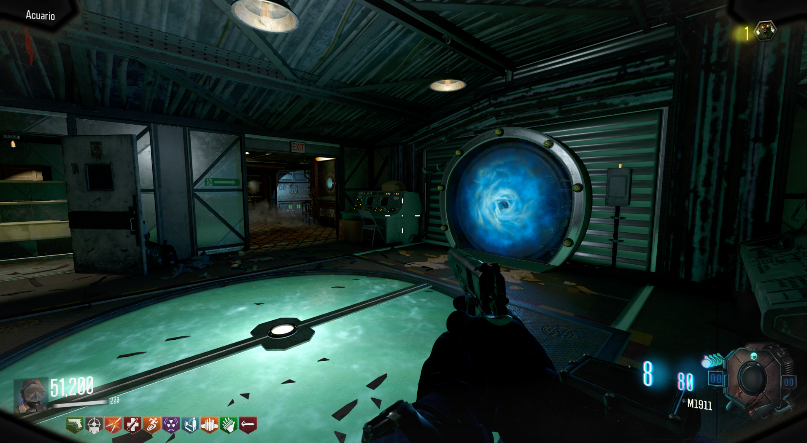

Propiedades de la máscara:
Duración de esprintar mejorada.
Movimiento bajo el agua incrementado.
Capacidad de respirar bajo el agua.
Cómo obternerlo:
Debemos de matar a los 6 tiburones que se encuentran en el agua.
Aquí todas las localizaciones:
Cuando matemos a los 6 tiburones, tendremos que ir a la zona del Acuario, cerca del Almacén, y entrar al portal.

En el Cuarto de Samantha encontraremos la máscara.